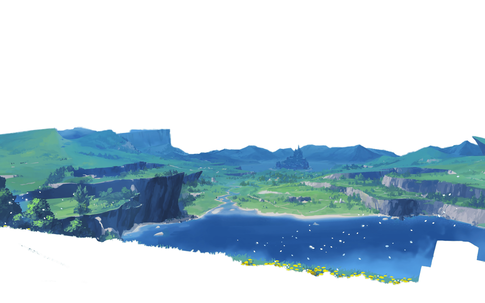
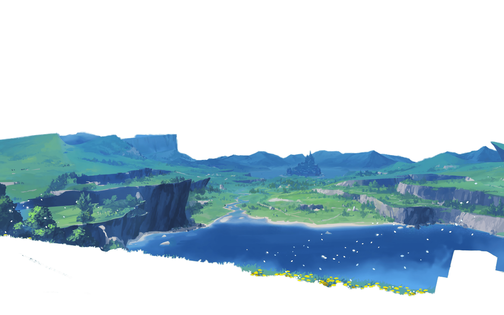
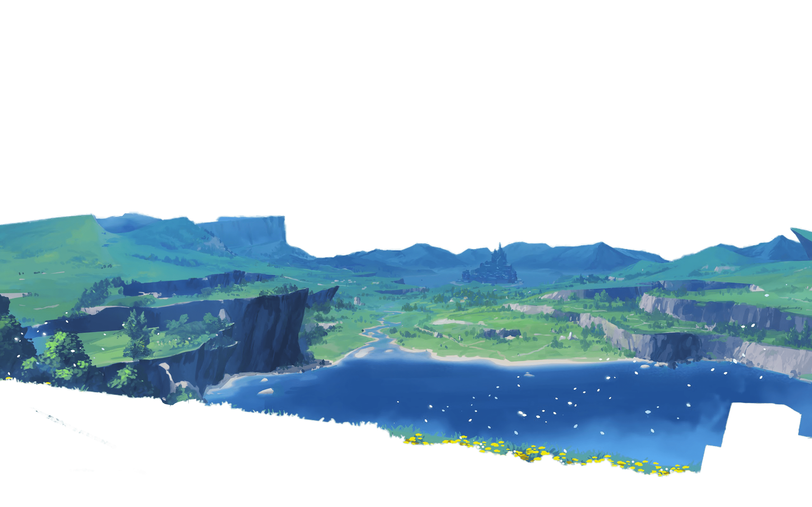
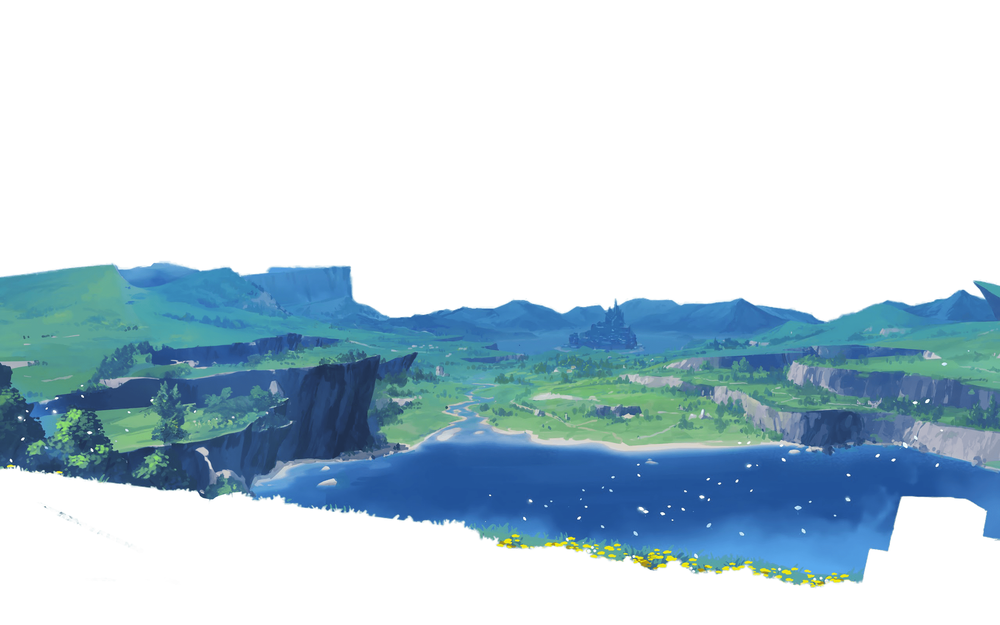

Genshin Impact is a video game that takes place in the fantasy world of Teyvat, home to seven nations. Each of which is tied to a different element ruled by a different god.
People of Teyvat with particularly powerful desires who have the potential to ascend to Celestia are granted with visions which are items that allow their users to directly channel the power of one of the seven Elements.